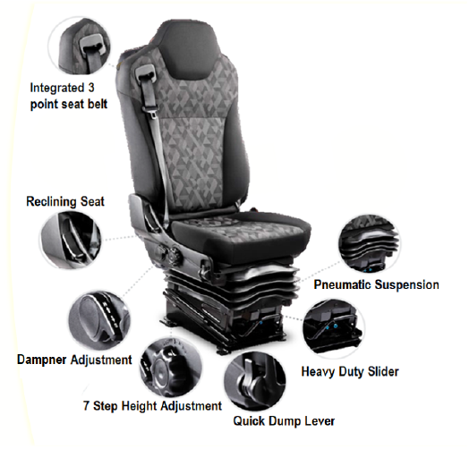

Air Suspended Seat
• Air Suspended Seats for the Tippers & Tractors models
• With the help of Air Suspended Seats, drivers will experience higher comfort, thereby resulting in
longer driving hours for enhanced productivity.

Applicable
Models-
Pro 8035XM, Pro 6028T,
Pro 6035T/HRT,
Pro 6055/1XP
& Pro
6055XP
Benefits
- Adjustable dampener: Enables stiffness adjustment
- Integrated seat belt: With enhanced safety, comfort & ease of usage
- Heavy duty slider: For demanding applications, providing comfortable seating
- Quick dump lever: Complete deflation through single switch operation